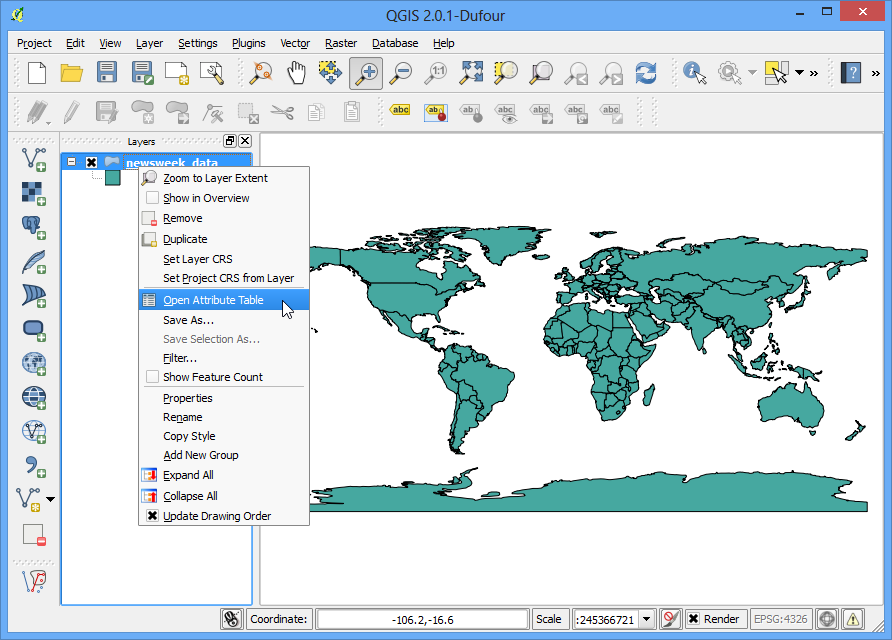
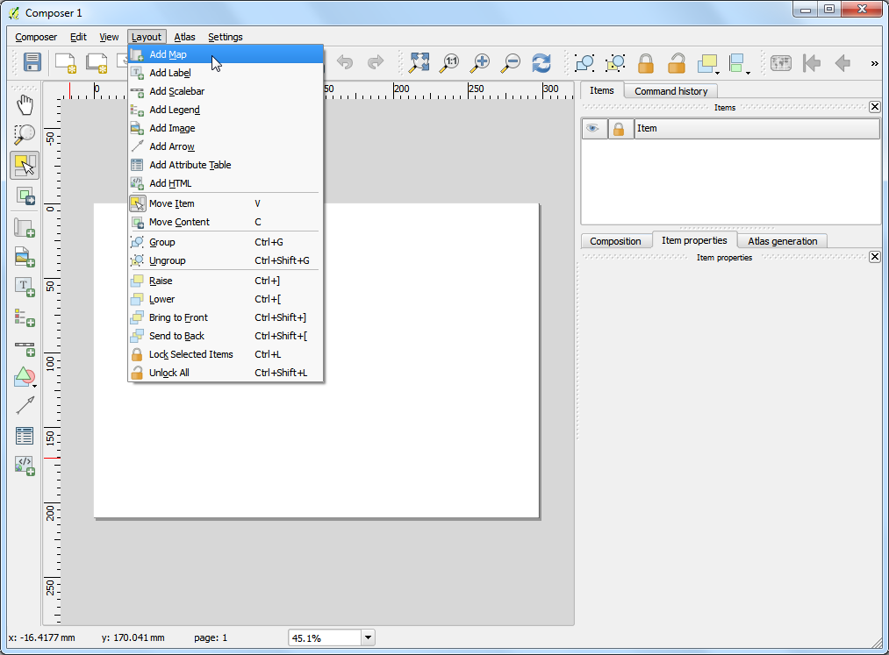
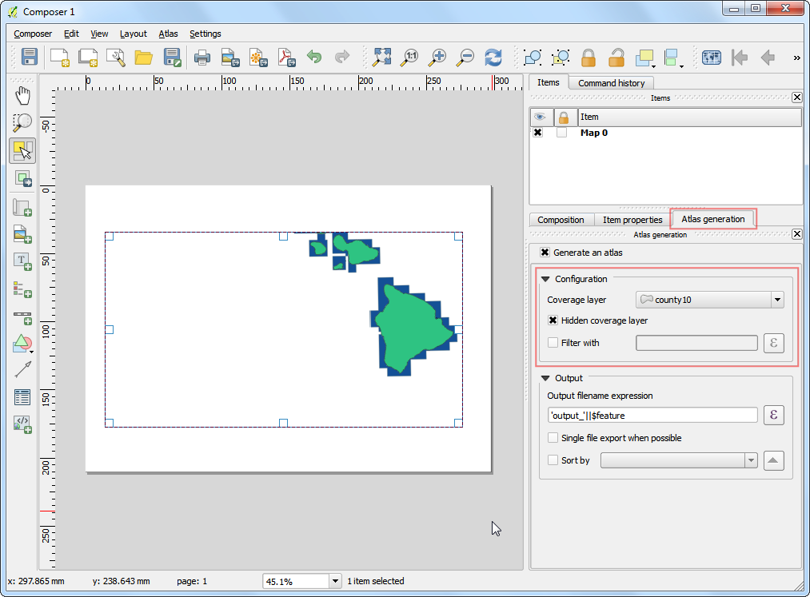
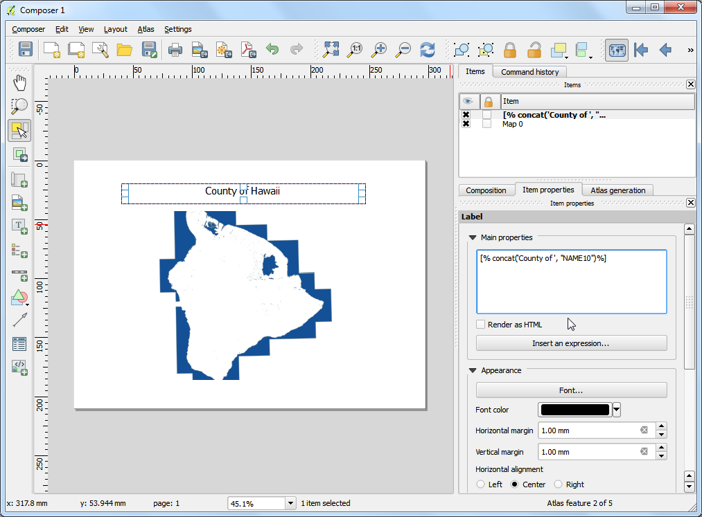

Основная стилизация векторного слоя
[ Download PDF A4 Letter ]
Чтобы создать карту, нужно стилизовать данные ГИС и представить их в визуально информативной форме. Есть большое количество опций, доступных в QGIS, применяемых к символизации данных. В этом уроке мы будем изучать некоторые основы стиля.
Обзор задачи
Мы стилизуем векторный слой так, чтобы показать продолжительность жизни в разных странах мира.
Другие навыки, которые Вы узнаете
Получить данные
Данные, которые мы будем использовать, предоставлены Центром устойчивого развития и глобальной окружающей среды (SAGE) <http://www.sage.wisc.edu/atlas/maps.php> _ в Университете Висконсин-Мэдисон.
Вы можете скачать данные о продолжительность жизни <http://www.sage.wisc.edu/atlas/data.php?incdataset=Life%20Expectancy> _ из архива данных. Для удобства Вы также можете скачать копию этих данных, нажав на следующую ссылку:
lifeexpectancy.zip
Источник данных [SAGE]
Процедура
Откройте QGIS и перейдите в

Найдите скачанный файл lifeexpectancy.zip и нажмите Открыть. Выберите newsweek_data.shp и снова нажмите Открыть. Затем Вы должны выбрать СОК. Выберите WGS84 EPSG:4326 в качестве системы отсчёта координат (СОК).

Файл формы, находящийся в архиве, теперь загружен, и к нему применён стиль по умолчанию.

Щёлкните правой кнопкой мыши на имени слоя и выберите Открыть таблицу атрибутов.

Исследуйте различные атрибуты. Для стилизации слоя мы должны выбрать атрибут или столбец, который будет представлять карту, которую мы пытаемся создать. Так как мы хотим создать слой, представляющий продолжительность жизни, т.е. средний возраст, до которого человек живет в стране, нам нужен атрибут LIFEXPCT, сокращённо от Life Expectancy - продолжительность жизни.

Закройте таблицу атрибутов. Снова щёлкните правой кнопкой мыши на слое и выберите Свойства.

Различные варианты стилизации расположены во вкладке Стиль окна свойств. Нажав на кнопку, открывающую выпадающее меню, в окне стиля, вы увидите пять опций: Единичный символ, Категоризованный, Упорядоченный, По правилу и Смещение точек. Мы изучим первые три в этом уроке.

Выберите Единичный символ. Эта опция позволяет Вам выбрать единственный стиль, применяемый ко всему на слое. Это набор данных полигона, поэтому у вас будет два выбора. Во-первых, вы можете залить полигон, или стилизовать его обводку. По желанию Вы можете выбрать точечный узор. Затем нажмите ОК.

Вы увидите, как новый стиль применился к слою в соответствии с выбранными настройками.

Как Вы можете заметить, тип “Единичный символ” не сильно помогает перенести продолжительность жизни на карту. Давайте попробуем другое вариант. Снова нажмите правой кнопкой на слой и перейдите в Свойства. На этот раз выберите Категоризованный на вкладке Стиль. “Категоризованный” значит, что всё на слое будет окрашено в соответствии со значениями атрибутов. Выберите LIFEXPCT как Столбец. Затем выберите желаемое изменение цвета и нажмите Классифицировать внизу. Нажмите ОК.

Вы увидите, как разные страны окрасились в разные оттенки синего. Светлые оттенки значат меньшую продолжительность жизни, тёмные - большую. Это представление данных полезно и ясно показывает продолжительность жизни в развитых и развивающихся странах. Именно такой стиль мы и хотели создать.

Давайте исследовать Graduated тип науки о символах в Style диалог сейчас. Откалиброванный тип науки о символах позволяет вам ломать данные в колонке в уникальном classes и выбирать различный стиль для каждого из классов. Мы можем подумать о классификации наших данных продолжительности жизни в 3 классах, LOW, MEDIUM и HIGH. Выберите LIFEXPCT как Column и выбирают 3 как классы. Вы посмотрите там - много Mode optionsa vailable. Давайте видеть логику сзади каждого из этих методов. Есть 5 доступных методов. Equal Интервал, Quantile, Natural Перерывы (Jenks), Standard Отклонение и Pretty Перерывы. Эти методы используют различные статистические алгоритмы, чтобы сломать данные в отдельных классах.
Равный интервал: Этот метод, как и предполагает имя, создаст классы равного размера. Если наши данные имеют значения 0-100, и мы хотим 10 классов, то этот метод создаст классы 0-10, 10-20, 20-30 и т.д., придерживаясь размера в 10 для каждого класса.
Квантильный: Этот метод разделит классы так, что в каждом будет равное количество пунктов. Если у нас есть 100 значений, и мы хотим 4 класса, квантильный режим поместит в каждый класс по 25 значений.
Естественное разделение: Этот алгоритм попытается сгруппировать значения так, чтобы они выглядели естественно. Значения в конечных классах будут отличаться максимально от значений других классов, но минимально между собой.
Стандартное отклонение: Этот метод посчитает среднее значение данных и создаст классы, основываясь на отклонении от этого значения.
Приятное разделение: Использует алгоритм статистического разделение R’s pretty algorithm. Он немного сложен, но приятное в названии означает, что границы классов будут круглыми числами.
Чтобы упростить работу, давайте используем квантильный режим. Нажмите Классифицировать внизу, и Вы увидите 3 новых класса с соответствующими значениями. Нажмите ОК.
Примечание
Чтобы использовать атрибут в стиле Упорядоченный, он должен быть циферным. Любые вещественные числа подойдут, но если значение будет строкой, Вы не сможете использовать этот тип стилизации.

Вы увидите карту, показывающую страны в 3 разных цветах, в зависимости от средней продолжительности жизни.

Теперь идите назад к окну Стиль, нажав правой кнопкой мыши на слой и выбрав Свойства. Там есть ещё больше опций. Вы можете нажать на символ каждого класса и выбрать нужный стиль. Мы используем красный, жёлтый и зелёный цвета заливки, чтобы показать малую, среднюю и высокую продолжительности жизни.

В окне Выбор символа нажмите на Цвет.

В окне Цвет выберите нужный цвет.

В окне Свойства слоя Вы можете дважды кликнуть по столбцу Ярлык рядом с каждым значением и ввести текст для отображения. Также вы можете дважды кликнуть по столбцу Значение, чтобы редактировать область значений. Нажмите ОК, когда закончите с классами.

Этот стиль определённо даёт больше полезной информации, чем две предыдущие попытки. Теперь у нас также есть чётко отмеченные имена классов и цвета, представляющие среднюю продолжительность жизни.
